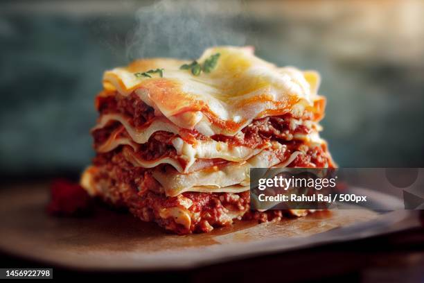

Angela's Awesome Lasagne

Description
Lasagne: de bechamelsaus maakt 'm romig en houdt de laagjes bij elkaar. Ook fijn: lasagne kun je prima invriezen. Tip: vries 'm in porties in, dan kun je er meerdere dagen van genieten.
Ingredients
- 1 teen knoflook
- 100 g bleekselderij
- 100 g winterpenen
- 1,5 el milde olijfolie
Steps
- Snipper de ui en snijd de knoflook fijn. Snijd de bleekselderij en wortel in blokjes van een ½ cm. Verhit de olie in een hapjespan en fruit de ui, knoflook, groente en spekreepjes 5 min. op laag vuur. Voeg het gehakt toe en bak op middelhoog vuur in 5 min. rul. Voeg de tomatenpuree toe en bak 2 min. mee. Voeg 200 ml melk (per 4 personen) toe en laat al roerend op hoog vuur bijna helemaal inkoken, dit duurt ca. 5 min.
- Voeg de passata toe en breng aan de kook. Zet het vuur laag en laat met de deksel half op de pan 45 min. zachtjes koken.
- Maak ondertussen de bechamelsaus. Smelt op laag vuur de boter in een steelpan met dikke bodem. Meng de bloem erdoor en laat op laag vuur 3 min. gaar worden. Voeg al roerend met een garde de rest van de melk in delen toe. Voeg pas de volgende scheut toe als de vorige helemaal is opgenomen. Breng aan de kook. Laat de saus op laag vuur 2-3 min. zachtjes koken. Breng op smaak met peper en eventueel zout.
- Verwarm de oven voor op 180 °C. Rasp de Parmezaanse kaas. Maak laagjes in de ovenschaal van achtereenvolgens de tomatensaus, lasagnebladen, tomatensaus, bechamelsaus en ¼ van de geraspte kaas. Herhaal 2 keer en eindig met een laagje bechamelsaus en de rest van de geraspte kaas.
- Bak de lasagne 25-35 min. in het midden van de oven.
Home